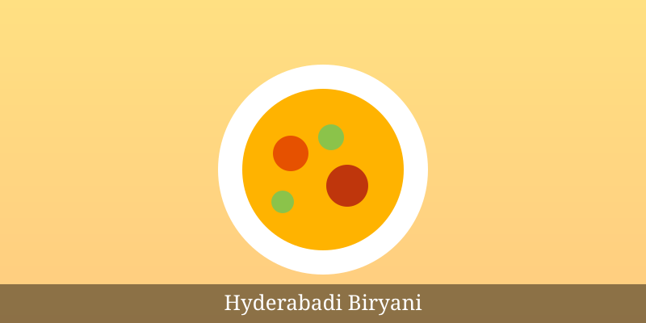
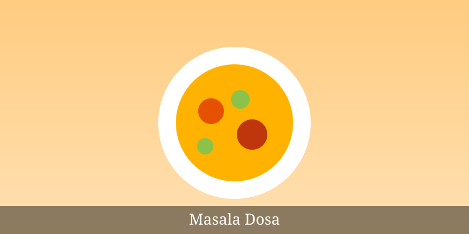
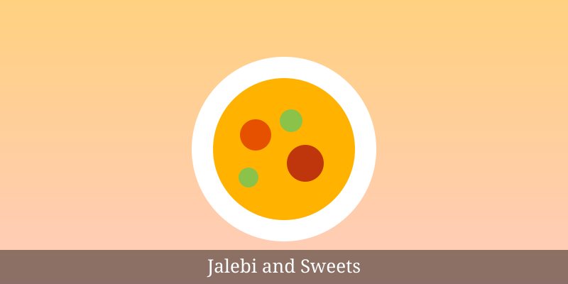

Home | Destinations | Foods | Places | Gallery | Contact
Famous Indian Foods
Indian food is famous for its spices and different tastes. Each part of India has its own special dishes.
5 Famous Dishes
- Butter Chicken
- Biryani
- Masala Dosa
- Pani Puri
- Gulab Jamun
Food Types
- North Indian
- South Indian
- Street Food
- Desserts
About the Dishes
- Biryani
- Rice cooked with spices and meat or vegetables.
- Masala Dosa
- A crispy pancake filled with spicy potato.
- Jalebi
- A sweet made of fried batter dipped in sugar syrup.



Home | Destinations | Foods | Places | Gallery | Contact